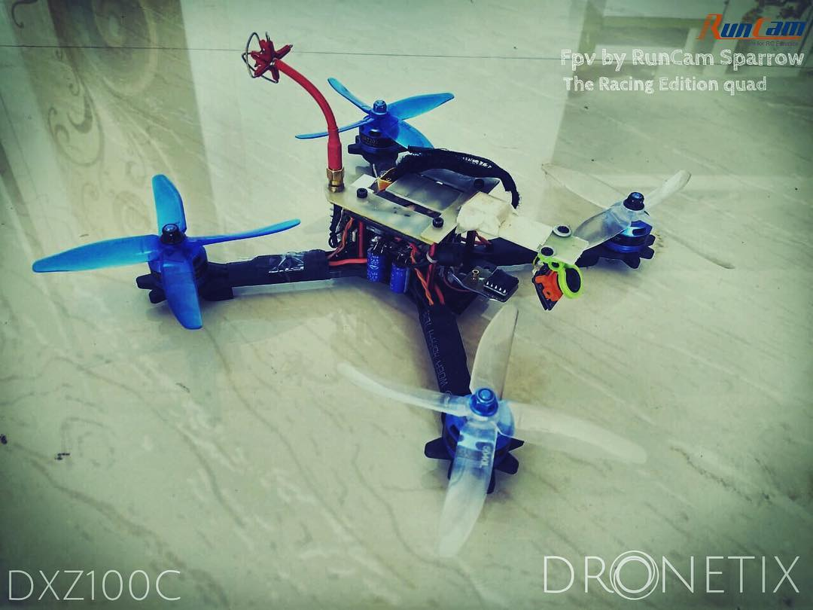

TRIX MARKETPLACE

DXS500C.F7
Designed to lift & film through Camcorders.
1. Dual Processor:ARM Cortex M7 & ARM Cortex M3
2. S500 frame with servo controlled carbon
fiber landing gears
3. Consists of Manual and Automated mode algos
( RTH, POS hold ,alt hold,waypoint tracking).
4.Fetching live Telemetry Datas of your Lipo
voltage, satellite holds, live current drawn datas,etc.
Rs 45,000

DXCVS250C.F4
Designed for racing and stunt
1. Processor ARM Cortex M3
2. 2600kv motors with 35 amp esc
3. Consists of Manual and Automated mode algos
( RTH, POS hold ,alt hold,waypoint tracking).
4. Satellite hold data telemetry
5. custom sens setting for stunt mode
Rs 22,000

DXS250C.F4
Perfect for Photography
1. Processor:ARM Cortex M3 (upgradable to M7)
2. GoPro Hero6
3. Consists of Manual and Automated mode algos
( RTH, POS hold ,alt hold,waypoint tracking).
4. Live video output support for ios/android platform
5. Telemetry : Lipo, current drawn satellite holds,
instant voltage drop,etc
6. One dimension cam movment(customise your direction)
Rs 24,000
DXF550B.F3
Designed for filming through Camcorders
1. Processor ARM Cortex M3
2. 980 kv motors with 30 amp esc
3. Consists of Manual and Automated mode algos
( RTH, POS hold ,alt hold).
4. RTH as safety feature
Rs 30,000